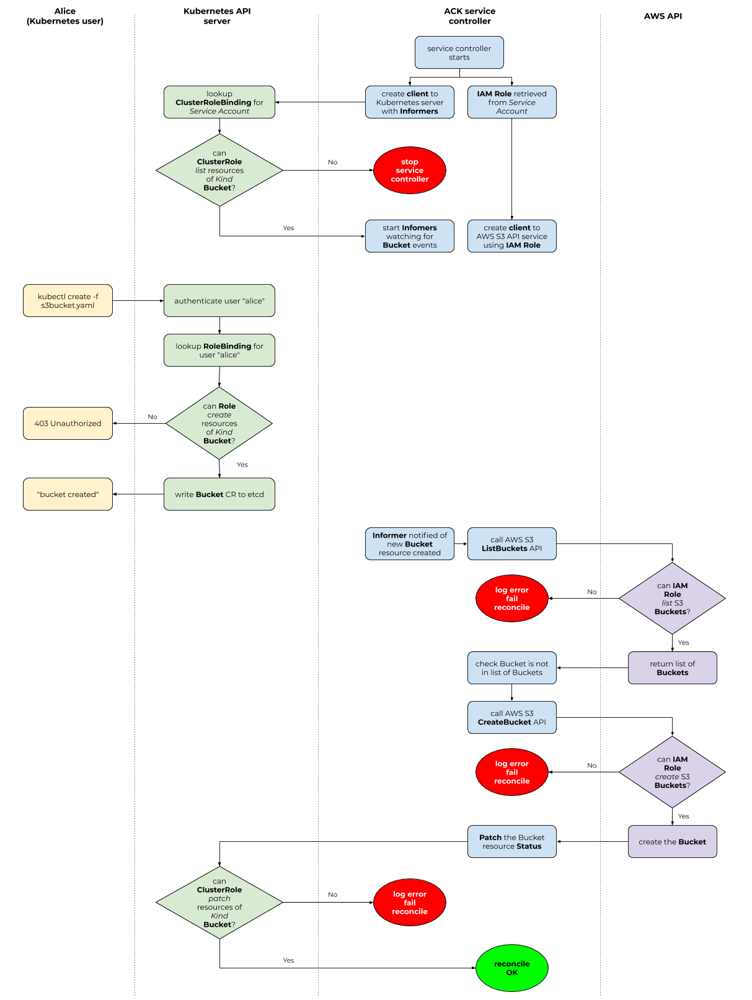

Authorization¶
When we talk about authorization and access control for ACK, we need to discuss two different Role-based Access Control (RBAC) systems.
Remember that Kubernetes RBAC governs a Kubernetes user's ability to read or write Kubernetes resources. In the case of ACK, this means that Kubernetes RBAC system controls the ability of a Kubernetes user to read or write different custom resources (CRs) that ACK service controllers use.
On the other end of the authorization spectrum, you can use AWS Identity and Access Management (IAM) Policies to governs the ability of an AWS IAM Role to read or write certain AWS resources.
IAM is more than RBAC
AWS IAM is more than just an RBAC system. It handles authentication/identification and can be used to build Attribute-based Access Control (ABAC) systems. In this document, however, we're focusing on using IAM primitives to establish an RBAC system.
These two RBAC systems do not overlap. The Kubernetes user that calls the
Kubernetes API via calls to kubectl has no association with an IAM Role.
Instead, it is the ServiceAccount running the ACK service controller's
Pod that is associated with an IAM Role and is thus governed by the IAM RBAC
system.

RBAC authorization mode
The above diagram assumes you are running Kubernetes API server with the RBAC authorization mode enabled.
Configure permissions¶
Because ACK bridges the Kubernetes and AWS APIs, before using ACK service controllers, you will need to do some initial configuration around Kubernetes and AWS Identity and Access Management (IAM) permissions.
Configuring Kubernetes RBAC¶
As part of installation, certain Kubernetes Role resources will be created
that contain permissions to modify the Kubernetes custom resources (CRs) that
the ACK service controller is responsible for.
Important
All Kubernetes CRs managed by an ACK service controller are Namespaced resources; that is, there are no cluster-scoped ACK-managed CRs.
By default, the following Kubernetes Role resources are created when
installing an ACK service controller:
ack-$SERVICE-writer: aRoleused for reading and mutating namespace-scoped custom resources that the service controller manages.ack-$SERVICE-reader: aRoleused for reading namespaced-scoped custom resources that the service controller manages.
When installing a service controller, if the Role already exists (because an
ACK controller for a different AWS service has previously been installed),
permissions to manage CRDs and CRs associated with the installed controller's
AWS service are added to the existing Role.
For example, if you installed the ACK service controller for AWS S3, during
that installation process, the ack-s3-writerr Role would have been granted
read/write permissions to create CRs with a GroupKind of
s3.services.k8s.aws/Bucket within a specific Kubernetes Namespace.
Likewise the ack-s3-reader Role would have been granted read permissions to
view CRs with a GroupKind of s3.services.k8s.aws/Bucket.
If you later installed the ACK service controller for AWS SNS, the installation
process would have added permissions to the ack-sns-writer Role to
read/write CRs of GroupKind sns.services.k8s.aws/Topic and added
permissions to the ack-sns-reader Role to read CRs of GroupKind
sns.services.k8s.aws/Topic.
If you would like to use a differently-named Kubernetes Role than the
defaults, you are welcome to do so by modifying the Kubernetes manifests that
are used as part of the installation process.
Bind a Kubernetes User to a Kubernetes Role¶
Once the Kubernetes Role resources have been created, you will want to assign
a specific Kubernetes User to a particular Role. You do this using standard
Kubernetes RoleBinding resource.
For example, assume you want to have the Kubernetes User named "alice" have
the ability to create, read, delete and modify S3 Buckets in the "testing"
Kubernetes Namespace and the ability to just read SNS Topic CRs in the
Kubernetes "production" Namespace you would execute the following commands:
kubectl create rolebinding alice-ack-s3-writer --role ack-s3-writer --namespace testing --user alice
kubectl create rolebinding alice-ack-sns--reader --role ack-sns-reader --namespace production --user alice
As always, if you are curious whether a particular Kubernetes user can perform
some action on a Kubernetes resource, you can use the kubectl auth can-i
command, like this example shows:
kubectl auth can-i create buckets --namespace default
Configuring AWS IAM¶
Since ACK service controllers bridge the Kubernetes and AWS API worlds, in addition to configuring Kubernetes RBAC permissions, you will need to ensure that all AWS Identity and Access Management (IAM) roles and permissions have been properly created.
The IAM Role that your ACK service controller runs as will need a different set of IAM Policies depending on which AWS service API the service controller is managing. For instance, the ACK service controller for S3 will need permissions to read and write S3 Buckets.
We include with each service controller a recommended IAM Policy that restricts
the ACK service controller to taking only the actions that the IAM Role needs
to properly manage resources for that specific AWS service API. Within each
service controller's source code directory is a config/iam/recommended-policy-arn
document that contains the AWS Resource Name (ARN) of the recommended managed
policy for that service and can be applied to the IAM Role for the ACK service
controller by calling aws iam attach-role-policy on the contents of that file:
SERVICE=s3
BASE_URL=https://github.com/aws/aws-controllers-k8s/blob/main/services
POLICY_URL=$BASE_URL/$SERVICE/config/iam/recommended-policy-arn
POLICY_ARN="`wget -qO- $POLICY_URL`"
aws iam attach-role-policy \
--role-name $IAM_ROLE \
--policy-arn $POLICY_ARN
Note
Set the $IAM_ROLE variable above to the ARN of the IAM Role the
ACK service controller will run as.
Some services may need an additional inline policy, specified in
config/iam/additional-policy, in addition to the managed policy from
recommended-policy-arn. For example, the service controller may require
iam:PassRole permission in order to pass an execution role which will be
assumed by the AWS service. With $IAM_ROLE still set, run the script at
config/iam/additional-policy if there is one to create the inline policy.
Cross-account resource management¶
ACK service controllers can manage resources in different AWS accounts. To enable and start using this feature, as an administrator, you will need to:
1. Configure your AWS accounts, where the resources will be managed.
2. Create a ConfigMap to map AWS accounts with the Role ARNs that needs to be assumed
3. Annotate namespaces with AWS Account IDs
For detailed information about how ACK service controllers manage resource in multiple AWS accounts, please refer to CARM design document.
Setting up AWS accounts¶
AWS Account administrators should create/configure IAM roles to allow ACK service controllers to assume Roles in different AWS accounts.
For example, to allow account A (000000000000) to create s3 buckets in account B (111111111111) you can use the following commands
# Using account B credentials
aws iam create-role --role-name s3FullAccess \
--assume-role-policy-document '{"Version": "2012-10-17","Statement": [{ "Effect": "Allow", "Principal": {"AWS": "arn:aws:iam::000000000000:role/roleA-production"}, "Action": "sts:AssumeRole"}]}'
aws iam attach-role-policy --role-name s3FullAccess \
--policy-arn 'arn:aws:iam::aws:policy/service-role/AmazonS3FullAccess'
Map AWS Accounts with their associated Role ARNs¶
After you will need to create a ConfigMap to associate each AWS Account ID with the role ARN that needs be assumed, in order to manage resources in that particular account.
cat <<EOF | kubectl apply -f -
apiVersion: v1
kind: ConfigMap
metadata:
name: ack-role-account-map
namespace: ack-system
data:
"111111111111": arn:aws:iam::111111111111:role/s3FullAccess
EOF
Bind accounts to namespaces¶
To bind AWS accounts to a specific Namespace you will have to annotate the Namespace with an AWS Account ID. For example:
cat <<EOF | kubectl apply -f -
apiVersion: v1
kind: Namespace
metadata:
name: production
annotations:
services.k8s.aws/owner-account-id: 111111111111
EOF
For existing namespaces you can also run:
kubectl annotate namespace production services.k8s.aws/owner-account-id=111111111111
Create resource in different AWS accounts¶
Now to create resources in account B you will have to create your CRs in the associated Namespace.
For example to create an s3 bucket in account B you can run the following command:
cat <<EOF | kubectl apply -f -
apiVersion: s3.services.k8s.aws/v1alpha1
kind: Bucket
metadata:
name: my-bucket
namespace: production
spec:
name: my-bucket
EOF